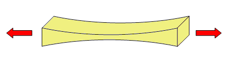
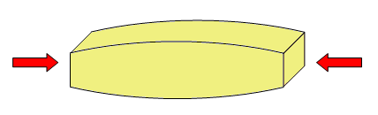
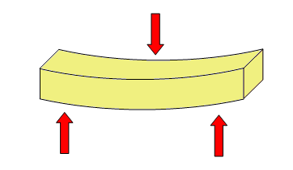
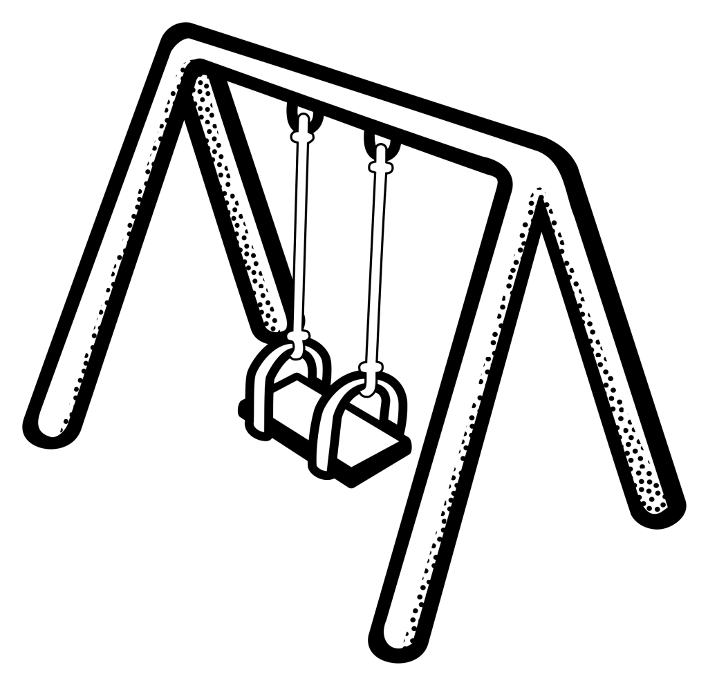

Efforts¶
The structures are intended to withstand external loads without deforming or breaking. As a result of these external loads, the structures support internal forces called efforts.
Loads and efforts¶
- Load
- It is an external force acting on a structure. It can be a weight, a push, a thermal expansion, etc.
- Effort
- Internal stress or force that supports a structure as a result of external loads.
For example, a person sitting on a chair is a load on the chair. Due to this load, the legs of the chair support a compressive effort.
There are 5 different efforts. Each one is explained below.
Traction¶
Tensile stress tends to stretch the structure:
Examples of elements that support this effort are:
- Chains of a swing
- Cable of a crane
Compression¶
The compressive stress tends to compress the structure:
Examples of elements that support this effort are:
- Legs of a chair
- Columns of a building
Flex¶
The bending stress tends to bend the structure:
Examples of elements that support this effort are:
- Board of a chair
- Building floors
- Arm of a crane
Torque¶
Torque tends to twist the structure:

Examples of elements that support this effort are:
- Shaft of a screwdriver
- Key when turning
- Shaft of a faucet
Cut or shear¶
The shear stress or shear stress tends to cut the structure in two:

Examples of elements that support this effort are:
- Paper cut with scissors
- Screw that supports a frame
Exercises¶
Find two examples of tensile stresses that are not on this page.
Find two examples of compression stresses that are not on this page.
Find two examples of bending stresses that are not on this page.
Find two examples of torque that are not on this page.
Find two examples of shear or shear stresses that are not on this page.
Draw and name the forces that appear in a swing when a child climbs on the seat.
Analyze the stresses that appear in a table when a weight is placed on top of it.
Analyze the stresses that appear in a crane when it lifts a load.

{kind=link}
{kind=link}
{kind=link}
{kind=link}